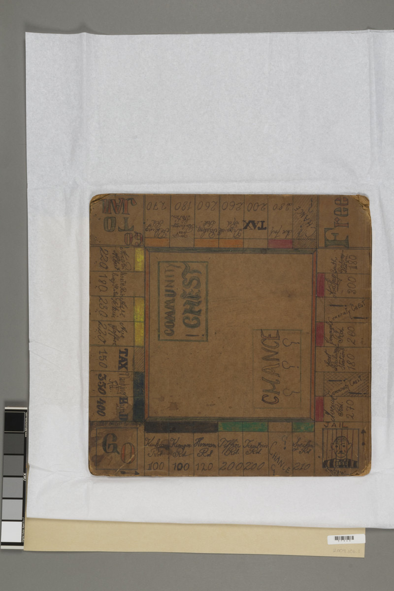

1. Material Information

Lobel 1946 board. USHMM Collection 2001.406.1. Board rotated 180° in photograph.
| Object | Handmade board game |
|---|---|
| Title | "Shanghai Millionaire" (hand-lettered) |
| Creators | Manfred & Siegfried Lobel |
| Date | 1946 |
| Place | Shanghai (presumed) |
| Repository | United States Holocaust Memorial Museum |
| Accession No. | 2001.406.1 |
| Medium | Hand-drawn on cloth/paper board; English-language place names and monetary values handwritten in ink or pencil |
| Features | Colour-coded property groups; Community Chest & Chance central zones; 4 railway stations; corner squares (GO, JAIL, FREE PARKING, GO TO JAIL) |
| Condition | Photographed inverted; moderate fading; most text legible at high resolution |
Why this object matters. The Lobel board is one of only two known surviving artefacts of Shanghai Monopoly — and the only one made by children. It is not a degraded copy of the commercial game, but a parallel cartography: preserving the financial hierarchy of Nanking Road ($350) and The Bund ($400) while substituting and omitting streets at the lower and middle tiers. The board encodes the spatial memory of Jewish refugee children in wartime Shanghai.
2. Three Versions at a Glance
Shanghai Real Estate
- 22 streets
- 4 real shipping lines
- $60–400 (US price ladder)
- Your Night Out tax ($35)
- 11 unique streets (Rubicon, Mac Leod,…)
Shanghai Millionaire
- 22 streets
- 4 railway stations (E/S/W/N)
- $60–400 (London colour ladder)
- Super Tax ($100)
- 11 unique streets (Ave Roi Albert, Kiukiang,…)
Lobel 1946
- ~19–22 streets (partial ID)
- 4 railway stations
- $100–400 (compressed)
- TAX confirmed
- 1 unique street: Dixwell Road
Street Overlap Structure
SRE and SHM share 11 streets but disagree on price for 9 of them. Lobel inherits all SHM streets and adds one: Dixwell Road.
SRE (22) SHM (11)
┌──────────────┐ ┌──────────────┐
│ Rubicon Rd │ 11 shared │ Ave Haig │
│ Mac Leod Rd │ Nanking │ Hart Rd │
│ Columbia Cir │ Bund │ Ave Rd │
│ Ave Foch │ Ave Petain │ Yu Ya Ching │
│ Route Say-Z..│ Ave Joffre │ Tientsin Rd │
│ Canton Rd │ Honan Rd │ Ningpo Rd │
│ Hankow Rd │ Kiangse Rd │ Ave Roi Alb..│
│ Soochow Rd │ Szechuen Rd │ Connaught Rd │
│ West End Gds │ Peking Rd │ Hardoon Rd │
│ Ave Edw.VII │ Bubbling W. │ Seymour Rd │
│ Broadway │ Great W.Rd │ Kiukiang Rd │
└──────┬───────┘ Yu Yuen Rd └──────┬───────┘
│ │
│ Lobel 1946 (~19-22) │
│ ┌──────────────────────────┘
└──┤ All SHM streets
│ + 4 Railway Stations
│ + Dixwell Rd (NOWHERE else)
│ × ZERO SRE-only streets
└─────────────────────────
3. Evidence: Lobel Descends from Shanghai Millionaire
Seven pieces of evidence converge on a single conclusion: the Lobel board was copied from a Shanghai Millionaire commercial set, and shows no interaction with the parallel Shanghai Real Estate edition.
| # | Evidence | Points to |
|---|---|---|
| 1 | 4 Railway Stations (East, South, West, North) — all four are legible on the Lobel board | SHM SRE uses 4 real shipping lines instead |
| 2 | Avenue Roi Albert — confirmed on Lobel; a SHM-exclusive street | SHM Not in SRE |
| 3 | KIUKIANG Road — confirmed on Lobel; a SHM-exclusive street | SHM Not in SRE |
| 4 | Avenue Haig — visible on Lobel; a SHM-exclusive street | SHM Not in SRE |
| 5 | Tientsin Road — identified on Lobel; a SHM-exclusive street | SHM Not in SRE |
| 6 | Super Tax — corner TAX square visible on Lobel | SHM SRE uses "Your Night Out" tax instead |
| 7 | ALL 11 SRE-exclusive streets are ABSENT from Lobel Rubicon · Mac Leod · Columbia Circle · Avenue Foch · Route de Say-Zoong · Canton · Hankow · Soochow · West End Gardens · Avenue Edward VII · Broadway |
NOT SRE If Lobel had seen SRE, at least one of these would likely appear |
Conclusion: The Lobel 1946 board is unambiguously descended from the Shanghai Millionaire commercial edition. It bears zero traces of the parallel Shanghai Real Estate edition — no SRE-exclusive streets, no shipping lines, no "Your Night Out" tax. The two commercial editions circulated independently in Shanghai, and the Lobel brothers had access to only one of them.
4. Same Streets, Different Prices
The 11 streets shared by SRE and SHM reveal a remarkable pattern: only Nanking Road and The Bund receive the same price in both games. The other 9 shared streets show price divergences of $20–$120 — proving that the two editions were independently designed.
| Street | SRE | SHM | Divergence | Interpretation |
|---|---|---|---|---|
| Nanking Road | $350 · Dark Blue | $350 · Dark Blue | — | Both agree: absolute pinnacle |
| The Bund | $400 · Dark Blue | $400 · Dark Blue | — | Both agree: absolute pinnacle |
| Peking Road | $240 · Red | $120 · Light Blue | $120 | Largest divergence. SRE sees it as a major commercial road; SHM places it in the lowest-mid tier. |
| Great Western Road | $100 · Light Blue | $220 · Red | $120 | Nearly opposite. SRE treats it as cheap periphery; SHM as prime residential. |
| Kiangse Road | $220 · Red | $300 · Green | $80 | SHM elevates Kiangse to near-financial-core tier. |
| Avenue Petain | $140 · Pink | $180 · Orange | $40 | SHM consistently values French Concession higher. |
| Avenue Joffre | $160 · Pink | $200 · Orange | $40 | Same pattern: SHM French Concession premium. |
| Honan Road | $180 · Orange | $140 · Pink | $40 | Interesting reversal: SRE ranks it higher than SHM. |
| Yu Yuen Road | $260 · Yellow | $220 · Red | $40 | SRE considers it premium residential; SHM places it mid. |
Why? SRE inherits the Parker Brothers U.S. colour-price ladder, where colour groups loosely map to road prominence. SHM inherits the Waddington's London ladder, where colours systematically encode social class (east-to-west poverty-to-wealth gradient). The same Shanghai streets were slotted into fundamentally different mental frameworks.
5. Dixwell Road: The Only Street That Matters
Among the ~19–22 streets identified on the Lobel board, one name stands alone: Dixwell Road (溧阳路).
Dixwell Road does not appear on either commercial edition — neither Shanghai Millionaire nor Shanghai Real Estate. It is the only street that is exclusively Lobel.
Why Dixwell Road?
The Shanghai Jewish School was founded in 1902 on Dixwell Road, inside the Shearith Israel synagogue (Ohel Rachel compound). It relocated in 1930, but the street remained central to Shanghai's Jewish community identity.
The Lobel brothers — Manfred and Siegfried — were Jewish refugee children. Their inclusion of Dixwell Road is not random: it is autobiographical geography. They inscribed their lived space into the game grid, replacing a commercial street with one that held personal meaning.
Spatial Context
| Chinese name | 溧阳路 |
|---|---|
| District | Hongkou (虹口), north of Suzhou Creek |
| Jurisdiction | Originally International Settlement (Northern District); under Japanese control 1937–1945 |
| Jewish significance | Shanghai Jewish School (1902–1930); Ohel Rachel Synagogue; core of Jewish refugee settlement zone |
| On commercial boards? | No. Neither SHM nor SRE includes it. |
Theoretical Significance
The presence of Dixwell Road transforms the Lobel board from a copy into a counter-mapping. The commercial editions encode a colonial designer's view of Shanghai — finance, Western residences, treaty-port infrastructure. The Lobel board encodes a refugee child's view — school, neighbourhood, community. Two cartographies, one city.
This is the strongest material evidence yet for Ian's "game design from life" methodology: the children did not passively copy — they re-authored the game with their own spatial memory. Dixwell Road is the signature of that authorship.
5.1 Lobel Family in Hongkou: An Interactive Map
Dixwell Road (溧阳路) is shown as a red line running through Hongkou. Markers show the Lobel family's known locations, 1940–1946. Click any marker for full detail.
📜 Official 1943 Hongkew Ghetto Boundary Order
From the Japanese Proclamation of 18 February 1943 (Restricted Sector for Stateless Refugees):
"The designated area is bordered on the west by the line connecting Chaoufoong, Muirhead, and Dent Roads; on the east by Yangtzepoo Creek (杨树浦/虹口港); on the south by the line connecting East Seward, Muirhead, and Wayside Roads; and on the north by the boundary of the International Settlement."
Old road names → Modern equivalents
| Old name | Modern name | Direction |
|---|---|---|
| Chaoufoong Road 兆丰路 | Gaoyang Road 高阳路 | N–S (western edge) |
| Muirhead Road 麦克利奥路 | Macleod Rd 麦克利奥路 | N–S (central) |
| Dent Road 邓脱路 | Huoshang Rd 霍山路区域 | E–W (northern edge) |
| East Seward 东虬江路 | East Qiujiang Rd | E–W (southern edge) |
| Wayside Road 海宁路 | Haining Rd 海宁路 | E–W (southern edge) |
| Yangtzepoo Creek 杨树浦水道 | Hongkou Creek 虹口港 | E (natural boundary) |
6. Three Thesis Arguments
I. One City, Two Price Systems
Shanghai Real Estate × Shanghai Millionaire
Shanghai Real Estate and Shanghai Millionaire share 11 street names, yet assign them to starkly different price tiers — Peking Road ranges from $120 (SHM, Light Blue) to $240 (SRE, Red), while Avenue Petain moves from $140 (SRE, Pink) to $180 (SHM, Orange). Only Nanking Road and The Bund, the undisputed pinnacles of Shanghai real estate, occupy the same top tier in both games. This divergence confirms that the two editions were independently designed from different proprietary templates (Parker Brothers U.S. vs. Waddington's London), each encoding a distinct mental geography of treaty-port space.
II. From Colonial Gaze to Refugee Memory
Lobel 1946 × Shanghai Millionaire
The Lobel brothers' 1946 handmade board is unambiguously descended from Shanghai Millionaire — it preserves the four railway stations, SHM-exclusive streets such as Avenue Roi Albert and Kiukiang Road, and the financial hierarchy of Nanking Road ($350) and The Bund ($400). Yet the inclusion of Dixwell Road — a street absent from both commercial editions — signals a rupture: the children have inscribed their own geography into the game. Dixwell Road housed the Shanghai Jewish School (1902–1930), and its presence on the board transforms the grid from a colonial abstraction into a mnemonic map of refugee daily life.
III. The Double Peak: Why Nanking Road and The Bund Never Change
SRE · SHM · Lobel 1946
Across three independent versions of Shanghai Monopoly — two commercial editions from different design traditions and one handmade children's copy — Nanking Road and The Bund consistently occupy the highest price tier. This invariant pairing constitutes the most robust evidence that certain spatial landmarks transcended subjective design choices, operating instead as objective constraints on the game's economic model. The Bund and Nanking Road were not merely "placed" on the board; they were the board's gravitational center.
7. Quick Lookup: All Streets in All Three Versions
| Street | SRE | SHM | Lobel |
|---|---|---|---|
| Nanking Road | $350 · Dark Blue | $350 · Dark Blue | ✓ |
| The Bund | $400 · Dark Blue | $400 · Dark Blue | ✓ |
| Avenue Petain | $140 · Pink | $180 · Orange | ✓ |
| Avenue Joffre | $160 · Pink | $200 · Orange | ? |
| Honan Road | $180 · Orange | $140 · Pink | ✓ (Honnan) |
| Kiangse Road | $220 · Red | $300 · Green | ✓ |
| Szechuen Road | $300 · Green | $320 · Green | ? |
| Peking Road | $240 · Red | $120 · Light Blue | ✓ |
| Bubbling Well Road | $260 · Yellow | $280 · Yellow | ? |
| Great Western Road | $100 · Light Blue | $220 · Red | ? |
| Yu Yuen Road | $260 · Yellow | $220 · Red | ? |
| Avenue Haig | — | $60 · Purple | ✓ |
| Hart Road | — | $60 · Purple | ✓ |
| Avenue Road | — | $100 · Light Blue | ✓ |
| Yu Ya Ching Road | — | $100 · Light Blue | ? |
| Tientsin Road | — | $140 · Pink | ? |
| Ningpo Road | — | $160 · Pink | ? |
| Avenue Roi Albert | — | $180 · Orange | ✓ |
| Connaught Road | — | $240 · Red | ? |
| Hardoon Road | — | $260 · Yellow | ? |
| Seymour Road | — | $260 · Yellow | ? |
| Kiukiang Road | — | $300 · Green | ✓ |
| Rubicon Road | $60 · Purple | — | — |
| Mac Leod Road | $60 · Purple | — | — |
| Columbia Circle | $100 · Light Blue | — | — |
| Avenue Foch | $120 · Light Blue | — | — |
| Route de Say-Zoong | $140 · Pink | — | — |
| Canton Road | $180 · Orange | — | — |
| Hankow Road | $200 · Orange | — | — |
| Soochow Road | $220 · Red | — | — |
| West End Gardens | $280 · Yellow | — | — |
| Avenue Edward VII | $300 · Green | — | — |
| Broadway | $320 · Green | — | — |
| Dixwell Road ★ | — | — | ✓ NEW |
★ = Unique to Lobel. Dixwell Road is the only street appearing in none of the commercial editions — a signature of the children's autobiographical geography.